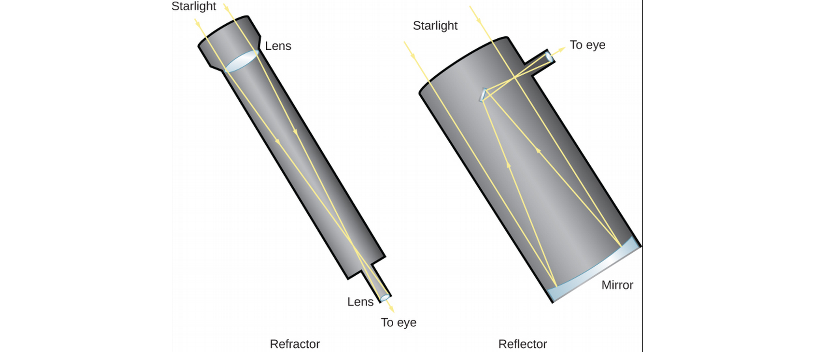

ASTR101 Ch 4-5
Ch 1 - Science and the Universe: A Brief Tour
Ch 6 - Astronomical Instruments
Telescopes
- Only about 9000 stars visible to human eye.
- A telescope is a "bucket" for catching more light than your pupils normally would.
- Size matters.
- Light from the telescope can be spectrally separated.
- Then the amount of light is detected by a detector, a sensor.
How Telescopes Work
- A telescope collects light from a source, and focuses it into a point or image.
- Collecting can be done with a lens or curved mirror.
- Telescope light-gathering power is compared with apertures; diameters of the telescope opening.
- How much more light can a telescope with twice the aperture collect?
- Can use an additional lens, the eyepiece, to magnify the image.
Lenses
- Lenses are typically curved glass that refract, or bend, light rays. This example converges light towards the focus of the lens, a focal length away from its center.

- Refracting telescopes use a lens to focus light, while reflecting telescopes use a mirror.

- Light travels through a lens in refracting telescopes; imperfections anywhere in the lens or in the cut cause distortions.
- Different frequencies travel differently in lenses (remember prisms?), leading to chromatic aberration in refracting telescopes.
- Glass sags!
- Reflecting telescopes avoid these problems with a concave primary mirror, for which only a single surface needs good manufacturing.

Telescopes Today
- Millions/billions of dollars to build.
- Motorized drives.
- Huge steel supports for heavy mirrors (around 15 tons!).
- Largest diameter 10.4 m.
- Correct mechanically for sag (among other things).
- Can use multiple mirrors together, like 36 hexagonal mirrors in Keck telescopes.
Picking the Best Observing Sites
- Gemini and Keck telescopes cost $100 million, so we want prime real estate.
- Mountains, far from light pollution is good.
- Other factors include clear weather, atmospheric water vapor, air turbulence (which leads to bad seeing). We want low turbulence, stable air (like air that's flowed over water a long distance).
- So we want high, dark, and dry.
The Resolution of a Telescope
- Resolution refers to precision of detail in an image.
- Resolution measured in arcseconds (how big a quarter would look, 5 km away!).
- Good resolution can come from high aperture.
- Resolution is weakened by gases of different temperature which act as lenses, distorting the image. This is why the stars "twinkle"!
- It's also why we have telescopes on satellites in space.
- Another option is adaptive optics, where we undistort atmospheric distortion with a flexible mirror.
Visible-Light Detectors and Instruments
- The human eye has short integration time; the time to accumulate light energy before sending a signal (to the brain). A fraction of a second. Also, the brain doesn't have a usb cable to save our data, so we use detectors.
- Before the detector, we typically use a spectrometer.
Photographic and Electronic Detectors
- Used to take photographs, now use charge-coupled devices (CCDs) like those in cellphone cameras, where light radiation is measured in a grid of pixels. This is 90 times more sensitive to light than the old photograph method.
Infrared Observations
- Infrared Zoo
- These are difficult because at an average surface temperature of 300 K, the Earth emits radiation at a peak wavelength of 10μm (Wien's Law).
- Detectors are shielded from nearby radiation and cooled near absolute zero (1-3 K) through immersion in liquid Helium.
Spectroscopy
- Gives information about chemical composition, temperature, motion, and more.
- Spread out light by color (using prism or more commonly, a grating) and put detectors in each color's path to measure just that color.

Radio Telescopes
- 1930s, Karl G. Jansky measures radio signals from an unknown source, strongest about 4 minutes earlier on each successive day. What does he conclude?
Detection of Radio Energy from Space
- Note: radio waves are not Ke$ha's latest hits, they categorize a band of waves 104-1012 Hz. We can't hear/see radio waves.
- Moving charged particles can create waves, so can waves move charged particles!
- How to create a radio wave-mirror? Radio waves are reflected by conducting surfaces. Radio telescopes resemble giant satellite dishes.
Radio Interferometry
- Longer wavelengths are harder to resolve; the largest radio telescope has lower resolution than an amateur telescope.
- Radio astronomers take advantage of interference in radio waves by linking two or more telescopes into an interferometer, or better yet, into an interferometer array, such as the National Radio Astronomy Observatory's Very Large Array (VLA) near Socorro, NM, consisting of 27 25-m aperture telescopes on railroads over 36 km.

- If we combine the interferometry data later, we can separate the telescopes further; as in the Very Long Baseline Array (VLBA);

Radar Astronomy
- Radar is bouncing radio waves off of objects in our solar system and analyzing the reflection. Timing gives us the distance to, say, a mountain on Jupiter's surface.
- Using the Doppler effect, radar observations can determine the speed of objects!
- Best facility was 305-m telescope in Arecibo, Puerto Rico, in a bowl shape with hills, wherein the detector is moved. Now surpassed by Five-hundred-meter Aperture Radio Telescope (FAST) in Pingtang Cty, China, which moves plates in the dish to focus on different objects.


Observations Outside Earth's Atmosphere
Airborne and Space Infrared Telescopes
- Water vapor is the main source of atmospheric interference, and it's concentrated in the lower part of Earth's atmosphere. Even 100 m elevation helps!
- Airplane observations have been made since 1960s, and are still being made.
Hubble Space Telescope (HST)
- Named for Edwin Hubble, who discovered the expansion of the universe in the 1920s (more on that later).
- Mirror so precise that if it were scaled to the size of the entire continental US, there would be no hill or valley larger than ~6 cm.
- Scientists saved money by not testing it before launch.

- Turns out the mirror's shape was off by the width of a human hair, enough to make things blurry.
- December 1993, astronauts captured the orbiting telescope and fixed it (even put a new camera on!).
- The HST has been upgraded and repaired multiple times since.
High-Energy Observatories
- Mirrors are harder for X- and γ- (gamma-)rays, which go through matter, but this is rectified in satellites (somehow).
- Gamma-ray detection can be done indirectly by observing byproducts of their collisions with charged particles on Earth.
The Future of Large Telescopes
- Large Synoptic Survey Telescope (LSST, 2021): Telescope with large field of view, scans sky for transients or events that happen quickly, such as exploding stars.
- Cherenkov Telescope Array (CTA, 2021-2025): Measures gamma rays from ground.
- Others working on larger-mirror telescopes (a third the size of a football field, composed of smaller mirrors).
Ch 7 - Other Worlds: An Introduction to the Solar System
Overview of our Planetary System
- Solar system: Sun, planets, moons, rings, debris (asteroids, comets, dust).
- All formed together around 4.5 billions years ago.
- Every planet has been flown past, orbited, or landed on by a probe.
- Probes have penetrated Jupiter's atmosphere and landed on Venus, Mars, the Moon, Saturn's moon Titan, and asteroids and comets.
An Inventory
- Planets orbit on the same plane, while dwarf planets don't.

- Four terrestrial planets; Mercury, Venus, Earth, and Mars—small, made of rock/metal.
- Four jovian, or giant planets: Jupiter, Saturn, Uranus, Neptune—large (1400 Earth fit in Jupiter, EC), made of ice, liquid, and gas.

Smaller Members of the Solar System
- Only Mercury and Venus are without moons.
- Largest moons are the Moon, 4 Galilean moons (Jupiter), and Titan (Saturn) and Triton (Neptune).
- Each of the giant planets has a ring with orbiting bodies ranging in size from dust to mountain.
- Asteroids are remnants of the formation of the solar system, some of them were likely captured as small moons.
- Comets are also remnants of solar system formation, but are made of ice (eg, carbon monoxide/dioxide, water) and orbit farther out.
- Meteors are broken rock (cosmic dust) and burn up if they enter Earth's atmosphere, become a meteorite if they hit the ground.
A Scale Model of the Solar System
- The text presents a scale model of the solar system, scaled down by 109.
Composition and Structure of Planets
The Giant Planets
- Recall there are the rocky terrestrial planets and icy jovian planets—they must have formed under different conditions.
- Largest planets Jupiter and Saturn close to Sun in composition. Heavier elements sink to rocky, metal, ice center, bulk is liquefied hydrogen.
- Uranus and Neptune also have a core of rock/metal/ice, but smaller atmospheres.
The Terrestrial Planets
- Most abundant rocks are silicates, made of silicon and oxygen, and most common metal is iron. Mercury has the greatest proportion of metal, the other 3 have similar composition of 2/3 silicates and 1/3 iron-nickel/sulfur combinations.
- Terrestrial planets also have denser matter in center of planet, leading to theory that they were once also liquid. Process of separating a planet's interior layers into different compositions and densities is called differentiation, which occurs when the planet is hot (melting point of rocks, ~1300K), and stays as the planet cools.
Moons, Asteroids, and Comets
- Most moons share the composition of their planet (rocky for terrestrial moons and icy with a hard core for giant planets' moons)
- Only the largest asteroids are differentiated.
Temperature: Going to Extremes
- Remember the light intensity falls as \(1/r^2\); this light also provides heat. The temperature reduces approximately as \(\frac{1}{\sqrt{r}}\), so the farther you are from the Sun, the colder it gets. Mercury (.39 AU from the Sun) is about 500 K, while Pluto (39.5 AU from the Sun) is 50 K.
- Remember, planetary atmosphere has a big effect on this; heat kept in by greenhouse effect; in which atmosphere has greater transparency to (incoming) visible radiation than (outgoing) infrared. The effect results in Venus having greater temperature than Mercury!
- Earth is the only planet we know of with surface temperature generally matching liquid phase of water.
Geological Activity
- Planets shaped in part by comet collisions—mostly during solar system formation, but even now; eg., Comet Shoemaker-Levy 9 with Jupiter, Summer 1994, which came within 660 million km.
- Internal forces can build mountains and build new islands; eg, volcanoes, earthquakes. Earth and Venus are most active planets, and even some jovian planet moons are active! The Moon has been dead and inactive for billions of years.
- Hawai'i's getting a new island by 32,018! (maybe)
- Earth and Venus have molten cores.


Dating Planetary Surfaces
Count the craters
- Rate of impact has been pretty constant for several billion years.
- Can only count to date when the planet "smoothed itself out" through, eg, lava flow.
- Can also be used to date smoothing events and date terrain.
Radioactive Rocks
- Some radioactive nuclei are unstable and can split apart (decay) to other nuclei, at random times.
- But we do know their half-life; the time for approximately half of them to decay in a large sample.
- The original unstable nuclei are the parents and they split apart to daughter particles.
- Every half-life, half of the particles will have decayed; this is the principle behind Carbon dating!

Origin of the Solar System
- An exoplanet is a planet outside of the solar system. Some of these range between the terrestrial and giant planets in size; termed superearths.
- In some exoplanet systems, the giants are close to the star and the terrestrial planets are farther (to be discussed in ch 21)!
Looking for Patterns
- Planets orbit the Sun (and, mostly, themselves) counter-clockwise, and the Sun orbits itself counter-clockwise, evidence that the Sun and planets may have formed from a spinning cloud of gas and dust called the solar nebula.
- Sun, Jupiter and Saturn have similar compositions, evidence they may have been formed from the same material reservoir.
- Terrestrial planets have less of these materials, since at their temperature so close to the Sun the materials would evaporate (whereas they're liquid/ice/gas in the vicinity of the giant planets).
The Evidence from Far Away
- We can compare this present data to star systems far away that are in varying stages of formations like that of the solar system to get a good picture of the birth of the solar system.
- The name for solar nebulas (the cloud posited to birth the solar system) outside of the solar system is circumstellar disks.
Building Planets
- As planets form from circumstellar disks common around young stars, we begin to see planetesimals—planet foetuses. Computer simulations with Physics laws taken into account support these theories.
- Still leaves the questions; why do Uranus and Pluto spin on their sides, why does Venus spin slowly around itself retroactively? These could be the results of early collisions.
Ch 8 - Earth as a Planet
The Global Perspective
Earth's Interior
- With a diameter of 12,756, how can we study Earth's innards?
- One way is to by measuring the transmission of seismic waves, sound waves that travel inside the Earth due to, eg, earthquakes or explosions. Just like a bell rings differently based on its shape and material distribution, the seismic waves change as they go through Earth.
- Seismic waves are measured at various locations, which has determined an inner composition for the Earth.

- The crust is the outermost layer, covered 55% by water by 6 km thick oceanic crust, made typically of basalt, volcanic rock produced from cooled lava, while 45% is 20-70 km-deep continental crust, made typically of granites, a class of silicates made from silicon and oxygen. .3% of Earth's mass.
- The mantle is the largest layer, going down to about 2900 km. It's pretty solid, though at these pressures/temperatures rocks can slowly move and deform. Density of 2.5-5 g/cm3.
- The core is dense and metallic with a diameter of 7000 km, larger than Mercury. The outer core is liquid, and the inner core (2400 km in diameter) may be solid.
- Evidence for differentiation is that the Earth's bulk density is 5.5 g/cm3 while its surface density is only 3 g/cm3.
Magnetic Field and Magnetosphere
- Moving ions in Earth's core create a giant magnetic field so that the Earth acts like a bar magnet; the region where this field dominates the Sun's magnetic field is called the magnetosphere, whose outer limit is the magnetopause.

- Charged particles moving in space become trapped in this magnetic field; namely, the solar wind, a collection of charged particles spreading outwards from the Sun's activities. This shapes the magnetic field of the Earth away from the Sun.
- High-energy ions are trapped in regions of the magnetosphere called the Van Allen Belt.
Earth's Crust
Composition of the Crust
- Largely oceanic basalt and continental granite (as discussed), both igneous rock (cooled lava, or molten rock).
- Sedimentary rocks are wind or water-deposited rock fragments that bind together without melting, such as sandstone, shales, and limestone.
- Metamorphic rocks are igneous rocks changed by high temperature and pressure.
- Neither sedimentary nor metamorphic rocks are common on other planets!
- Primitive rock is the material of the planetary system that hasn't undergone heating—there's none from Earth itself, since Earth was in a molten state.
Plate Tectonics
- Geology is the study of the Earth's crust and the causes of its shape.
- Plate tectonics explains the slow drift of continents and large geological features; it's a fundamental theory describing the heat transport of the Earth. A heat transport mechanism is created in the evolution of all planets, based in part on the planet's composition.
- From the crust outwards, Earth is divided into about a dozen tectonic plates which are moving, slowly.
- The plate movement is powered by convection, or heat transfer by the movement of cold and hot material, of the mantle. Convection mixes the milk in your coffee! https://www.instagram.com/p/BmQ57IQFLCl/?utm_source=ig_web_button_share_sheet